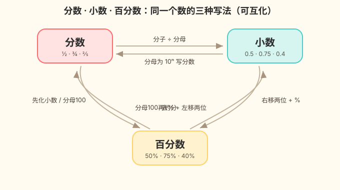

班级投票：喜欢公园的占 3/4，喜欢博物馆的占 0.7，哪个更多？今天学会把三种"语言"变统一。
百分数，表示一个数是另一个数的百分之几的数，叫做百分数；分数、小数与百分数，只是同一个数的不同写法。

选一个你关心的问题，后面的内容会围绕它展开。
选择或输入后，本课会围绕你的问题展开。
1. 0.25 等于下面哪个分数？
2. 把 3/5 化成小数，结果是？
分数和小数说的是同一类"部分与整体"，差别只在写法。
小数点向右移两位，加 %。
0.25 → 25% | 1.2 → 120%
去 %，小数点向左移两位。
75% → 0.75 | 120% → 1.20
最稳的办法：先化小数，再化百分数。
把 3/4、0.72、75% 化成同一种形式，按从大到小排列。ex-1
改任意一个框，另外两个会跟着变；下方正方形会按百分数涂色，数轴会标出位置。
点一下数轴，标出你想看的数（0～1）。
试试把分数改成 1/2、1/8，看看小数和百分数怎么变。
拖动滑块 a、b，看分数 a/b 落在 0–1 数轴的哪里，并读出它的小数、百分数写法。
3/4 = 0.75 = 75%
🛒 生活场景：商场「75 折」就是付原价的 75% ＝ 3/4 ＝ 0.75，在数轴上正好落在 3/4 处。把滑块拖到 a=3、b=4，就能看到「打 75 折」和分数 3/4 是同一个点。
💡 纯本地交互，无需联网；拖动滑块或点预设都能看到 a/b 在数轴上的位置。
1. 0.04 等于哪个百分数？
2. 把 5/8 化成小数？
3. 60% 化成分数（最简）？
1. 运动会小明投篮 20 次进 15 次，命中率是？
2. 超市 A 打"八折"，超市 B"降价 20%"，哪个更便宜？
3. 0.375 化成分数（最简）？
分变小数，分子÷分母；小变百分数，右移两位加 %；百分数变小，去号左移两位准。